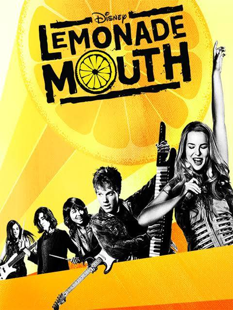

| Tier | Movie 1 | Movie 2 | Movie 3 | Movie 4 |
| S | |
High School Musical | Camp Rock | Princess Protection Program |
| A | Hatching Pete |  | Good Luck Charlie, It's Christmas | Freaky Friday |
| B | Minutemen | Jump In | Eddie's Million Dollar Cook-off | Zombies |
| C | Alley Cat Strikes | Go Figure | Zapped | Cow Belles |
| D | Quints | Frienemies | Rip Girls | Read It and Weep It |
This lab was not the hardest lab since it incoorporated some of the basic concepts we have learned so far. It was fun to learn how to code tables and forms. I felt like it definitely was one of the easier concepts to learn and apply. The tables were very easy to understand but the forms took a little more time to figure out. I had to revisit the lesson for guidance on the forms. I enjoyed the ease of this lab and I had fun styling it!